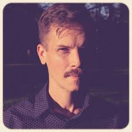

Token
Toninho Borbo: a trajetória de um artista que transformou Campina Grande em canção
Toninho Borbo é um dos nomes mais representativos da música autoral contemporânea da Paraíba. Cantor, compositor, violonista e produtor cultural, ele construiu uma carreira marcada pela diversidade de influências, pela valorização da cultura nordestina e por uma constante busca de diálogo entre tradição e modernidade. Nascido como Wilton Felipe de Oliveira, em 25 de novembro de 1978, na cidade de Campina Grande, Toninho cresceu em um ambiente profundamente ligado à arte e à música, circunstância que influenciaria decisivamente sua formação artística.
Infância e formação musical
A infância de Toninho foi vivida na região da Rua da Poroca, próxima ao antigo Beco da Boa Boca, área que se tornaria um importante polo boêmio e cultural de Campina Grande nos anos 1990. Em sua família, eram comuns os encontros musicais nos fins de semana, quando parentes se reuniam para cantar e tocar violão. Esse contato precoce com a música criou as bases de sua futura carreira.
Apesar da convivência com a música desde criança, foi apenas aos 14 anos que ele teve contato mais direto com o violão. O instrumento, emprestado por um tio, despertou uma paixão que rapidamente se transformou em dedicação. Paralelamente, participou de aulas de iniciação à harmonia musical e começou a estudar por conta própria através das tradicionais revistas de cifras.
Suas primeiras referências vieram da bossa nova e da MPB clássica, especialmente de João Gilberto, Tom Jobim e Vinicius de Moraes. Com o tempo, seu universo musical se ampliou para incluir artistas como Caetano Veloso, Chico Buarque, Gilberto Gil, Luiz Gonzaga, Zé Ramalho, Geraldo Azevedo, Jackson do Pandeiro, Chico César e Elba Ramalho. Ao mesmo tempo, incorporou influências do rock internacional, ouvindo bandas como Led Zeppelin, Deep Purple e Dire Straits. Essa mistura de referências seria uma das marcas registradas de sua obra.
Os primeiros palcos
Durante a adolescência e juventude, Toninho começou a se apresentar em bares, eventos universitários e festivais locais. Ainda estudante do Colégio Estadual da Prata, sonhava em ocupar os grandes palcos da cidade. Embora não tenha estreado no auditório da escola como imaginava, encontrou espaço para mostrar suas composições em festivais estudantis e apresentações culturais.
Em 2000, ingressou no curso de Ciências Sociais da Universidade Federal de Campina Grande (UFCG). A vivência acadêmica teve forte influência em sua formação intelectual e artística. Na universidade, participou da organização de eventos culturais e movimentos independentes que estimularam a produção artística local. Experiências como o projeto "O Cão Danado da Arte", as atividades no Hall das Placas da UFCG e as ações da Casa 1026 contribuíram para consolidar sua visão de cultura como instrumento de transformação social.
O nascimento de Toninho Borbo
O nome artístico "Toninho Borbo" surgiu no início dos anos 2000. Segundo relatos do próprio artista, amigos sugeriram a adoção de um nome mais marcante para o cenário musical. A inspiração veio durante o processo de lançamento de seu primeiro disco, e o apelido acabou se tornando sua identidade artística definitiva.
O lançamento de "Do Beco ao Eco", em 2003, marcou oficialmente sua entrada no mercado fonográfico. O álbum foi resultado de uma produção coletiva envolvendo amigos, colaboradores e apoiadores da cena cultural campinense. O título faz referência às ruas e becos que fizeram parte de sua formação e simboliza a intenção de levar a voz de sua cidade para além das fronteiras locais.
Consolidação da carreira
Após o lançamento do primeiro álbum, Toninho Borbo passou a ganhar reconhecimento na Paraíba e em outros estados do Nordeste. Em 2005, lançou um EP homônimo contendo cinco faixas. Uma das músicas do trabalho, "Não Merece", alcançou grande repercussão ao ser utilizada como toque de celular em uma campanha promocional, ampliando significativamente sua visibilidade.
Nos anos seguintes, o artista participou de festivais, feiras de música e circuitos culturais importantes da região. Realizou apresentações nos Centros Culturais Banco do Nordeste e participou da Feira de Música de Fortaleza, ampliando sua circulação pelo Nordeste brasileiro.
Ao longo de sua trajetória, Toninho desenvolveu uma linguagem musical difícil de encaixar em um único gênero. Embora frequentemente associado à MPB, seu trabalho incorpora elementos de samba, coco, embolada, rock, bossa nova, música eletrônica, rap e ritmos nordestinos. Essa liberdade criativa faz com que sua obra dialogue tanto com a tradição brasileira quanto com tendências contemporâneas.
Uma identidade artística ligada a Campina Grande
Uma característica recorrente na obra de Toninho Borbo é a forte ligação com Campina Grande. Em entrevistas, ele costuma afirmar que sua cidade é uma das principais fontes de inspiração para suas composições. A diversidade cultural campinense, onde convivem forró, rock, MPB, cultura popular e manifestações urbanas, aparece constantemente em suas letras e em sua sonoridade.
O próprio artista já se definiu como um "fantoche simbólico" de Campina Grande, alguém que traduz artisticamente a identidade cultural da cidade. Essa relação faz com que suas músicas frequentemente funcionem como retratos poéticos do cotidiano urbano e das transformações culturais do interior nordestino.
Discografia e legado
Desde o início da carreira profissional, Toninho Borbo acumulou mais de cinquenta músicas gravadas e lançou diversos trabalhos disponíveis nas plataformas digitais. Entre suas canções mais conhecidas estão "Meu Barco", "Água da Mágoa", "Biplano" e outras composições que evidenciam sua capacidade de transitar entre a poesia intimista e a observação social.
Em 2023, a Fundação Espaço Cultural da Paraíba (Funesc) destacou os vinte anos de lançamento do álbum "Do Beco ao Eco", reconhecendo a importância do disco para a música paraibana e para a consolidação da carreira do artista.
Importância para a música paraibana
Mais do que um cantor e compositor, Toninho Borbo tornou-se uma figura importante na articulação da cena cultural independente de Campina Grande. Sua atuação como produtor cultural, organizador de eventos e incentivador da música autoral contribuiu para fortalecer espaços de criação artística na cidade.
Sua trajetória demonstra como a música produzida no interior nordestino pode dialogar com influências globais sem perder sua identidade regional. Ao longo de mais de duas décadas de carreira, Toninho Borbo consolidou-se como um artista que une tradição e experimentação, transformando suas experiências pessoais, acadêmicas e culturais em canções que refletem a riqueza da diversidade brasileira.

Gregg Mervine: um norte-americano que fez da Paraíba sua segunda casa musical
A trajetória de Gregg Mervine é um exemplo raro de encontro profundo entre culturas. Nascido nos Estados Unidos e formado inicialmente dentro do universo da música folk e das tradições musicais norte-americanas, Gregg construiu uma relação tão intensa com o Brasil - especialmente com a Paraíba - que acabou se tornando uma figura importante na cena musical independente nordestina. Percussionista, produtor musical, pesquisador da cultura popular e compositor, ele dedicou anos de sua vida ao estudo das tradições musicais brasileiras, deixando contribuições marcantes para diversos artistas paraibanos, entre eles Toninho Borbo.
O encontro com a música brasileira
O primeiro contato mais profundo de Gregg Mervine com a música brasileira aconteceu através da percussão. Inicialmente, estudou ritmos brasileiros com Orlando Haddad e com o grupo Minas, nos Estados Unidos. A riqueza rítmica da música do Brasil despertou nele uma curiosidade que ultrapassava o simples interesse musical e se transformou em um verdadeiro projeto de vida.
Em 2007, ao lado do músico Jack Ohly, fundou o grupo Old Goats (Cabras Velhas), dedicado à pesquisa e interpretação da música popular do interior da Bahia. Esse trabalho serviu como porta de entrada para uma imersão ainda mais profunda nas tradições culturais do Nordeste brasileiro.
A mudança para a Paraíba
Movido pelo desejo de vivenciar diretamente as manifestações populares que estudava, Gregg mudou-se para a cidade de Monteiro, no Cariri paraibano, em 2010. A escolha não foi casual. A região é um dos centros mais ricos da cultura popular nordestina, preservando tradições seculares que vão desde os reisados até as bandas de pífano.
Durante os anos em que viveu na Paraíba, mergulhou no estudo de manifestações como:
- Bandas de pífano;
- Reisados;
- Cantorias populares;
- Incelenças;
- Tradições musicais do sertão e do Cariri.
Mais do que observador, Gregg tornou-se participante ativo desse universo cultural, convivendo com mestres populares, músicos tradicionais e artistas contemporâneos da região.
A atuação na cena musical paraibana
Foi durante sua permanência na Paraíba que Gregg Mervine passou a atuar intensamente como produtor musical e colaborador artístico. Seu trabalho aproximou artistas de diferentes linguagens, transitando entre a música popular tradicional e a produção contemporânea.
Ao longo desse período, trabalhou com nomes importantes da música paraibana, incluindo:
- Toninho Borbo;
- Sandra Belê;
- Chico Corrêa;
- Fernanda Cabral;
- Totonho;
- Parahyba Art Ensemble;
- Pife Perfumado.
Sua atuação era marcada pela sensibilidade de alguém que, embora estrangeiro, buscava compreender profundamente os elementos culturais locais antes de interferir artisticamente neles.
O produtor de "Biplano"
Entre os trabalhos mais importantes de sua carreira no Brasil está a produção do álbum "Biplano", de Toninho Borbo, lançado em 2018. O disco representa um dos momentos mais maduros da trajetória do cantor campinense, reunindo participações de artistas como Chico César, Seu Pereira, Sandra Belê, Luis Kiari e Silvério Pessoa. Gregg foi o responsável pela produção musical da obra, ajudando a construir a identidade sonora do projeto.
Seu trabalho em Biplano foi particularmente relevante porque conseguiu equilibrar a diversidade musical característica de Toninho Borbo com uma produção refinada, capaz de dialogar tanto com a tradição da canção brasileira quanto com elementos contemporâneos. O resultado foi um álbum elogiado por sua riqueza de texturas, arranjos e experimentações sonoras.
Além de Biplano, Gregg também produziu o álbum "Cantando para o Eterno", da cantora paraibana Sandra Belê, outro trabalho que evidencia sua proximidade com a produção cultural do estado.
O pandeiro como linguagem universal
Paralelamente à produção musical, Gregg desenvolveu um estudo aprofundado do pandeiro brasileiro. Durante sua estadia no país, buscou aperfeiçoamento com alguns dos mais respeitados instrumentistas da área, incluindo Bernardo Aguiar, no Rio de Janeiro, e Baixinho do Pandeiro, em João Pessoa.
Esse aprendizado permitiu que ele incorporasse ao seu trabalho uma compreensão técnica e cultural dos ritmos brasileiros que poucos músicos estrangeiros alcançam. Seu domínio do instrumento tornou-se uma das características centrais de sua identidade artística.
O retorno aos Estados Unidos
Após cerca de seis anos vivendo no Brasil, Gregg retornou aos Estados Unidos em 2016 com sua família. Entretanto, sua ligação com o país permaneceu viva. De volta à América do Norte, continuou atuando em projetos dedicados à música brasileira e à divulgação das tradições nordestinas.
Entre esses projetos destaca-se o duo Ernesto's Club, formado ao lado do pianista e acordeonista Rob Curto. No grupo, Gregg atua principalmente como percussionista e intérprete dos ritmos brasileiros, mantendo vivo o repertório e as experiências acumuladas durante sua longa passagem pelo Nordeste.
Um elo entre a Paraíba e o mundo
A importância de Gregg Mervine para a música paraibana vai além dos discos que produziu. Sua trajetória demonstra como a cultura popular do Nordeste possui força suficiente para atravessar fronteiras e despertar interesse genuíno em artistas de diferentes países.
Ao escolher viver no Cariri paraibano, estudar suas tradições e colaborar com músicos locais, Gregg construiu uma ponte cultural entre a Paraíba e os Estados Unidos. Seu trabalho ajudou a valorizar manifestações populares nordestinas e contribuiu para a circulação de artistas paraibanos em novos espaços de criação e reconhecimento.
Por isso, quando se fala na história de Biplano, de Toninho Borbo, o nome de Gregg Mervine ocupa um lugar especial: o de um produtor que não apenas gravou um disco, mas que compreendeu profundamente o contexto cultural que o tornou possível.
Aqui você confere uma seleção das músicas preferidas do Toninho! Som na caixa!